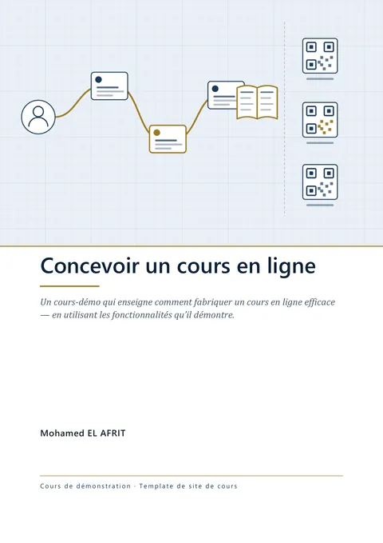

Le polycopié du cours
Tout le cours en un seul livret, à lire hors ligne, crayon en main. Le site le prolonge là où le papier s'arrête : dans la marge, des QR codes vous ramènent au bon endroit pour écouter, manipuler et vous corriger.
Un livret tiré des pages du site
outils/generer_polycopie.py lit les chapitres du site et compose le livret Word, puis Word en exporte le PDF ; outils/publier_polycopie.py le publie ici, avec sa couverture. Ce qui est propre au cours (la présentation de l'auteur, le pied de la couverture) vit dans outils/livret.py. Les QR codes du livret de démonstration portent une adresse d'exemple : un cours en ligne y met la sienne.
1. Le livret

Concevoir un cours en ligne
Un cours-démo qui enseigne comment fabriquer un cours en ligne efficace, en utilisant les fonctionnalités qu'il démontre.
Mohamed EL AFRIT · Cours de démonstration · Template de site de cours · Première édition
PDF · 23 pages · 0,9 Mo · en français
2. Ce qu'il contient
Le livret reprend le cours en ligne dans son ordre, avec les mêmes titres et les mêmes sections que le site : vous passez de l'un à l'autre sans rien chercher.
- Les chapitres, chacun ouvert par son mini-sommaire : le texte, les schémas expliqués élément par élément, les activités devenues exercices sur papier, « À retenir ».
- Le glossaire : le vocabulaire du cours, avec ses équivalents anglais.
- L'index, pour retrouver une notion : en gras, la page où la marge la définit.
3. Le livret et le site
La grande marge extérieure de chaque page porte vos notes et des QR codes : visez-en un avec l'appareil photo de votre téléphone, il ouvre, au bon endroit, la ressource en ligne qui prolonge le paragraphe voisin. Dans le PDF, à l'écran, cliquez le QR code ou sa légende : ils mènent au même endroit.
Aucune réponse n'est imprimée
Cherchez d'abord sur papier, puis scannez le QR code de l'activité : chaque réponse y est expliquée, la bonne comme les autres.
4. Pour l'imprimer
Le livret se lit aussi à l'écran : les signets du PDF mènent droit à chaque chapitre et à chaque section. Pour l'imprimer : A4, taille réelle (100 %), recto verso ; les marges sont en miroir, la grande marge toujours à l'extérieur. Le noir et blanc suffit : chaque encadré se reconnaît à son pictogramme, à son libellé et à son filet.
5. L'auteur
Ce texte présente l'auteur du cours : son parcours, ce qu'il enseigne et ce qui l'a conduit à écrire ce cours. Dans un cours créé depuis le gabarit, l'auteur l'écrit et le valide dans outils/livret.py ; le livret l'imprime alors mot pour mot.